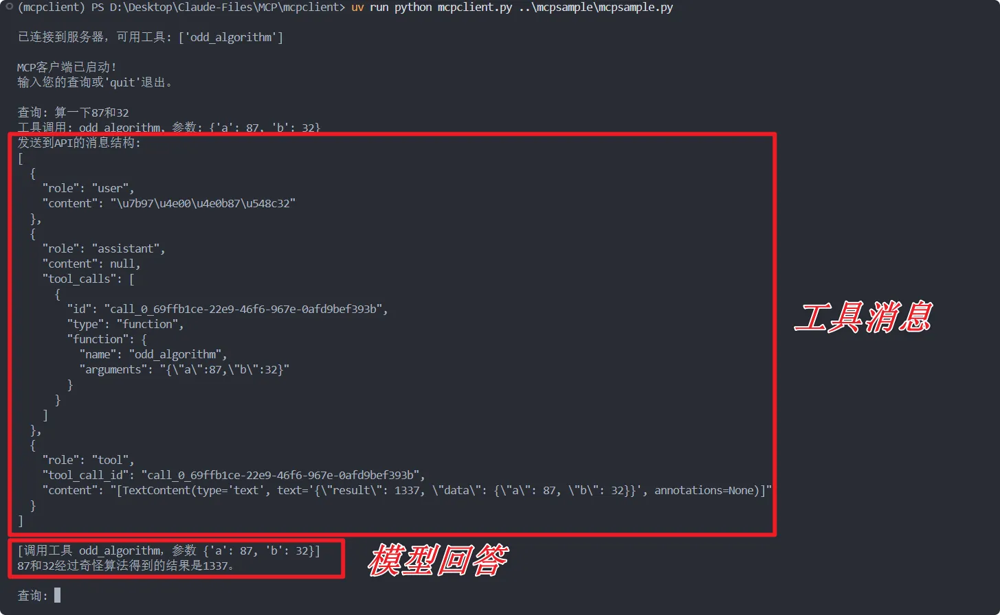

创建一个简单的mcp client
能创建 mcp server 就能创建一个 mcp client，但因为需要处理大模型的上下输入以及 api， 实现细节上会比 server 要复杂一点。
参考官方教程
我们还是能够实现一个简单的对话式 mcp client。
准备工作
之前已经开发过 mcp server，所以环境之类的配置应该已经很熟悉了，我们还是使用 uv 进行环境部署和开发，这里不再赘述。
为了使用 OpenAI 兼容的大模型接口，我们需要再特别引入 openai 库。
from openai import OpenAI
对接 mcp server
确保你有一个可以用来测试的 mcp server，为了简单方便我这里就是用之前已经创建好的“奇怪算法”的 server 用来演示。
完整代码
为了让你有一个宏观的认识，这里先把完整代码放出来：
import asyncio
import sys
import json
import signal
from typing import Optional, List
from contextlib import AsyncExitStack
from mcp import ClientSession, StdioServerParameters
from mcp.client.stdio import stdio_client
from openai import OpenAI
# 全局 API 配置
API_CONFIG = {
"api_key": "your-api-key-here",
"api_base": "API base url", # 或其他支持OpenAI兼容API的服务
"model": "模型名称" # 根据您使用的API提供商进行调整
}
class MCPClient:
def __init__(self):
# 初始化会话和客户端对象
self.session: Optional[ClientSession] = None
self.exit_stack = AsyncExitStack()
self.pending_tasks: List[asyncio.Task] = []
# 初始化OpenAI客户端
self.client = OpenAI(
api_key=API_CONFIG["api_key"],
base_url=API_CONFIG["api_base"]
)
async def connect_to_server(self, server_script_path: str):
"""连接到MCP服务器"""
is_python = server_script_path.endswith('.py')
is_js = server_script_path.endswith('.js')
if not (is_python or is_js):
raise ValueError("服务器脚本必须是.py或.js文件")
command = "python" if is_python else "node"
server_params = StdioServerParameters(
command=command,
args=[server_script_path],
env=None
)
stdio_transport = await self.exit_stack.enter_async_context(stdio_client(server_params))
self.stdio, self.write = stdio_transport
self.session = await self.exit_stack.enter_async_context(ClientSession(self.stdio, self.write))
await self.session.initialize()
# 列出可用工具
response = await self.session.list_tools()
tools = response.tools
print("\n已连接到服务器，可用工具:", [tool.name for tool in tools])
async def process_query(self, query: str) -> str:
"""使用OpenAI兼容 API和可用工具处理查询"""
messages = [
{
"role": "user",
"content": query
}
]
response = await self.session.list_tools()
available_tools = [{
"type": "function",
"function": {
"name": tool.name,
"description": tool.description,
"parameters": tool.inputSchema
}
} for tool in response.tools]
# 初始API调用
try:
response = self.client.chat.completions.create(
model=API_CONFIG["model"],
messages=messages,
tools=available_tools,
tool_choice="auto"
)
# 处理响应
final_text = []
# 获取模型的响应
message = response.choices[0].message
if message.content:
final_text.append(message.content)
# 处理工具调用
if hasattr(message, 'tool_calls') and message.tool_calls:
for tool_call in message.tool_calls:
tool_name = tool_call.function.name
tool_args = json.loads(tool_call.function.arguments)
# 打印调试信息
print(f"工具调用: {tool_name}, 参数: {tool_args}")
# 执行工具调用
result = await self.session.call_tool(tool_name, tool_args)
final_text.append(f"[调用工具 {tool_name}，参数 {tool_args}]")
# 返回工具调用结果
tool_result = str(result.content)
# 添加助手消息和工具结果到上下文
messages.append({
"role": "assistant",
"content": None,
"tool_calls": [
{
"id": tool_call.id,
"type": "function",
"function": {
"name": tool_name,
"arguments": tool_call.function.arguments
}
}
]
})
# 确保工具响应格式正确
messages.append({
"role": "tool",
"tool_call_id": tool_call.id,
"content": tool_result # 使用字符串
})
# 打印调试信息
print("发送到API的消息结构:")
print(json.dumps(messages, indent=2))
# 获取下一个响应 - 使用相同的模型
try:
second_response = self.client.chat.completions.create(
model=API_CONFIG["model"], # 使用全局配置的模型
messages=messages,
tools=available_tools,
tool_choice="auto"
)
next_message = second_response.choices[0].message
if next_message.content:
final_text.append(next_message.content)
except Exception as e:
final_text.append(f"获取最终响应时出错: {str(e)}")
print(f"获取最终响应时出错: {str(e)}")
return "\n".join(final_text)
except Exception as e:
return f"API调用出错: {str(e)}"
async def chat_loop(self):
"""运行交互式聊天循环"""
print("\nMCP客户端已启动！")
print("输入您的查询或'quit'退出。")
while True:
try:
query = input("\n查询: ").strip()
if query.lower() == 'quit':
print("正在清理并退出...")
break
response = await self.process_query(query)
print("\n" + response)
except Exception as e:
print(f"\n错误: {str(e)}")
import traceback
traceback.print_exc()
async def cleanup(self):
"""清理资源，简化版本，避免与anyio冲突"""
try:
# 简单地关闭退出栈，不使用wait_for
await self.exit_stack.aclose()
except Exception as e:
# 捕获但不重新抛出异常，只是记录它们
print(f"清理过程中出现异常 (可以忽略): {str(e)}")
async def main():
if len(sys.argv) < 2:
print("用法: python mcpclient.py <服务器脚本路径>")
sys.exit(1)
client = MCPClient()
# Windows平台不支持add_signal_handler，省略信号处理
try:
await client.connect_to_server(sys.argv[1])
await client.chat_loop()
finally:
await client.cleanup()
if __name__ == "__main__":
try:
asyncio.run(main())
except KeyboardInterrupt:
print("\n用户中断，程序退出")
except asyncio.CancelledError:
# 捕获并忽略取消错误
print("程序被取消，正常退出")
except Exception as e:
print(f"程序异常退出: {str(e)}")
import traceback
traceback.print_exc() # 打印详细的异常堆栈，便于调试
这个代码的功能就是能在终端中启用 mcp client，使用单轮对话的形式与 ai 完成交互。
# 全局 API 配置
API_CONFIG = {
"api_key": "your-api-key-here",
"api_base": "API base url", # 或其他支持OpenAI兼容API的服务
"model": "模型名称" # 根据您使用的API提供商进行调整
}
基本架构
MCP 客户端的核心架构包括以下组件：
● 连接管理：与 MCP 服务器建立连接
● 消息处理：发送请求和接收响应
● 工具管理：列出可用工具并处理工具调用
● AI 交互：与 AI 模型通信
● 用户界面：提供与用户交互的方式
关键依赖
mcp==0.1.0 # MCP 客户端库
openai==1.0.0以上 # 支持 OpenAI 兼容API的客户端
核心代码结构
一个最小化的 MCP 客户端应包括：
初始化和配置
class MCPClient:
def __init__(self):
# 配置客户端
self.session = None # MCP会话
self.exit_stack = AsyncExitStack() # 用于资源管理
# 初始化API客户端
self.client = OpenAI(
api_key="your-api-key",
base_url="https://api.provider.com"
)
连接到服务器
async def connect_to_server(self, server_script_path):
# 确定脚本类型和启动命令
command = "python" if server_script_path.endswith('.py') else "node"
# 设置服务器参数
server_params = StdioServerParameters(
command=command,
args=[server_script_path],
env=None
)
# 建立连接
stdio_transport = await self.exit_stack.enter_async_context(stdio_client(server_params))
self.stdio, self.write = stdio_transport
self.session = await self.exit_stack.enter_async_context(ClientSession(self.stdio, self.write))
await self.session.initialize()
# 列出可用工具
response = await self.session.list_tools()
return response.tools
处理查询
async def process_query(self, query):
# 准备消息
messages = [{"role": "user", "content": query}]
# 获取可用工具
response = await self.session.list_tools()
available_tools = [...] # 转换为API所需格式
# 调用AI
response = self.client.chat.completions.create(
model="model-name",
messages=messages,
tools=available_tools,
tool_choice="auto"
)
# 处理响应和工具调用
# 如果工具被调用，执行工具并将结果返回给AI
# ...
资源清理
确保正确清理资源是非常重要的：
async def cleanup(self):
try:
await self.exit_stack.aclose()
except Exception as e:
print(f"清理过程中出现异常 (可以忽略): {str(e)}")
脚本使用
可以在终端中使用这个脚本，但请确保已经激活了 uv 环境：
.venv\Scripts\activate
我们只可以指定脚本要对接的 mcp server，可以使用相对路径，例如我想要对接那个奇怪算法的 server：
uv run python mcpclient.py ..\mcpsample\mcpsample.py
测试一下：

这个 client 是可以运行的！